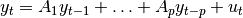

statsmodels.tsa.vector_ar.var_model.VAR¶
-
class
statsmodels.tsa.vector_ar.var_model.VAR(endog, dates=None, freq=None, missing='none')[source]¶ Fit VAR(p) process and do lag order selection

Parameters: endog : array-like
2-d endogenous response variable. The independent variable.
dates : array-like
must match number of rows of endog
References
Lutkepohl (2005) New Introduction to Multiple Time Series Analysis
Attributes
endog_namesNames of endogenous variables exog_namesMethods
fit([maxlags, method, ic, trend, verbose])Fit the VAR model from_formula(formula, data[, subset, drop_cols])Create a Model from a formula and dataframe. hessian(params)The Hessian matrix of the model information(params)Fisher information matrix of model initialize()Initialize (possibly re-initialize) a Model instance. loglike(params)Log-likelihood of model. predict(params[, start, end, lags, trend])Returns in-sample predictions or forecasts score(params)Score vector of model. select_order([maxlags, verbose])Compute lag order selections based on each of the available information Methods
fit([maxlags, method, ic, trend, verbose])Fit the VAR model from_formula(formula, data[, subset, drop_cols])Create a Model from a formula and dataframe. hessian(params)The Hessian matrix of the model information(params)Fisher information matrix of model initialize()Initialize (possibly re-initialize) a Model instance. loglike(params)Log-likelihood of model. predict(params[, start, end, lags, trend])Returns in-sample predictions or forecasts score(params)Score vector of model. select_order([maxlags, verbose])Compute lag order selections based on each of the available information Attributes
endog_namesNames of endogenous variables exog_names